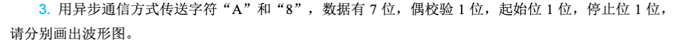
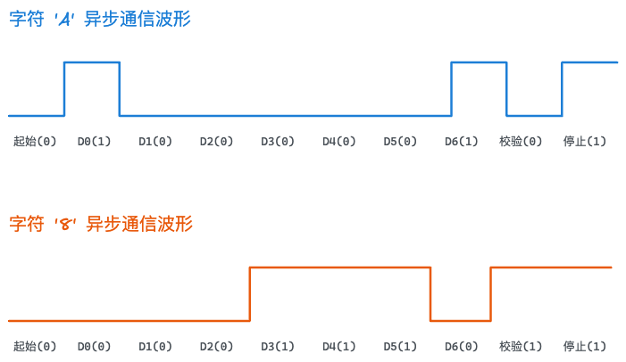
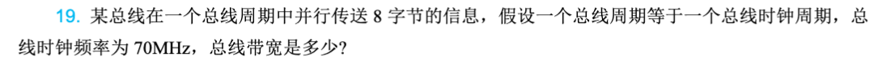

第6章：总线系统
Note
总线是计算机系统各部件之间传输数据、地址和控制信息的公共通道。本章从总线的基本概念入手，详细介绍总线的仲裁机制、定时方式以及总线标准，最后通过典型总线实例的分析，帮助读者理解现代计算机系统的互连技术。
本章要点： - 总线的基本概念与分类 - 总线仲裁的集中式与分布式方式 - 总线定时的同步与异步方式 - 总线标准与常见总线类型 - PCIExpress和USB等现代总线技术
6.1 总线概述
6.1.1 总线的基本概念
在计算机系统中，各个部件需要进行数据交换。如果为每对部件都建立独立的连接线路，会导致系统复杂、成本高昂且难以扩展。总线（Bus）提供了一种共享的通信路径，多个设备可以通过这条公共路径传输数据。
可以把总线想象成城市里的公共汽车路线：公共汽车沿着固定的路线（总线）行驶，沿途经过多个站点（设备），乘客（数据）可以在任何站点上下车。这种共享方式大大减少了需要建设的"道路"数量。
1. 总线的作用
总线在计算机系统中的主要作用包括：
- 数据传输：在CPU、内存、I/O设备之间传送数据
- 地址传输：指定数据传送的目标或源地址
- 控制传输：传递控制信号，协调各部件的工作
- 中断请求：I/O设备向CPU发送中断请求信号
- 电源供给：为某些设备提供电源
2. 总线主设备和从设备
根据在总线通信中的角色，设备可分为两类：
- 主设备（Master）：发起总线请求并控制总线活动的设备。通常是CPU或DMA控制器。
- 从设备（Slave）：响应主设备请求，被动接收或发送数据的设备。如内存、显示器等。
在一次总线传输中，主设备获得总线控制权后，向从设备发出读或写命令，从设备完成相应的操作。
6.1.2 总线系统的结构
1. 面向CPU的双总线结构
早期计算机采用这种结构，CPU与内存通过专用的内存总线连接，CPU与I/O设备通过I/O总线连接。这种结构的优点是CPU与内存通信效率高，缺点是I/O设备与内存通信需要经过CPU，性能较低。
2. 单总线结构
所有设备共享一条系统总线，CPU、内存和I/O设备都连接到这条总线上。这种结构简单灵活，便于扩展，但当设备增多时，总线会成为性能瓶颈。
3. 面向存储器的双总线结构
在单总线基础上增加一条内存总线，CPU可以直接与内存通信，同时仍通过系统总线与I/O设备通信。这种结构兼顾了内存访问效率和I/O扩展性，是现代计算机常用的结构。
图6-1展示了三种典型的总线结构。
6.1.3 总线的分类
1. 按功能分类
- 系统总线：连接CPU、主存等主要部件，传送数据、地址和控制信息
- I/O总线：连接各种I/O设备
- 局部总线：为高速I/O设备提供专用通道，如图形卡与内存间的高速连接
2. 按传输方式分类
- 并行总线：同时传送多位数据，如数据总线一次传送8位、16位或32位
- 串行总线：逐位传送数据，只需少数几根信号线
并行总线传输速度快，但占用较多引脚且信号同步困难，适合短距离传输。串行总线引脚少、抗干扰能力强，适合长距离传输。现代高速总线多采用串行方式，如PCIe、USB等。
3. 按位置分类
- 芯片级总线：芯片内部各功能单元之间的连接
- 板级总线：电路板上各芯片之间的连接
- 系统总线：主板上各部件之间的连接
6.1.4 总线性能指标
1. 总线宽度
总线宽度是指总线上能同时传输的数据位数，通常与数据总线位数相同。常见的有8位、16位、32位、64位等。总线宽度越宽，传输能力越强。
2. 总线频率
总线频率指总线时钟信号的频率，单位通常为MHz或GHz。频率越高，数据传输速度越快。例如，PCIe 4.0的频率为16GHz。
3. 传输速率
传输速率指单位时间内能传输的数据量，单位通常为MB/s或GB/s。计算公式为：
传输速率 = 总线宽度 × 总线频率 / 8
例如，32位总线，频率为66MHz，则传输速率为： 32 × 66 / 8 = 264 MB/s
4. 总线带宽
总线带宽是传输速率的理论最大值，实际传输时还会受到协议开销等因素影响，通常只有理论值的60%~80%。
6.2 总线仲裁
当多个设备同时请求使用总线时，需要一种机制来决定谁先使用，这就是总线仲裁（Bus Arbitration）。总线仲裁的目的是确保总线资源的合理分配，避免冲突。
6.2.1 集中式仲裁
集中式仲裁由一个独立的仲裁器（Arbiter）统一管理总线请求。仲裁器接收各设备的总线请求，根据预设的优先级算法决定哪个设备获得总线使用权。
1. 链式查询方式（菊花链仲裁）
链式查询是一种简单但有局限性的仲裁方式。所有设备的总线请求通过一条共享的请求线向仲裁器发出，仲裁器批准后，通过一条授权线依次向后级设备传递。第一个收到授权且发出请求的设备获得总线使用权。
这种方式的特点：
- 优点：简单，只需少数几根控制线
- 缺点：优先级固定（离仲裁器越近优先级越高），灵活性差；故障会直接影响下游设备
2. 计数器查询方式
仲裁器内部维护一个计数器，当收到总线请求时，计数器从0开始递增，依次查询各设备是否有请求。计数器的值通过设备地址线发送给各设备。
这种方式的特点：
- 优先级可以通过设置计数器初始值灵活调整
- 设备数量受设备地址线位数限制
3. 独立请求方式
每个设备都有独立的总线请求线和总线授权线。仲裁器同时接收所有请求，根据优先级算法直接向选中的设备发送授权信号。
这种方式的特点：
- 响应速度快，仲裁效率高
- 控制线数量多（2N条），硬件成本高
- 优先级算法灵活，可实现公平算法或优先级算法
图6-2展示了三种集中式仲裁方式的工作原理。
6.2.2 分布式仲裁
分布式仲裁没有中央仲裁器，各设备通过相互协商或竞争的方式决定总线使用权。
1. 自举式仲裁
各设备有固定的优先级。当发生总线请求时，优先级高的设备通过阻止低优先级设备获得授权来赢得总线。这种方式常用于简单的嵌入式系统。
2. 碰撞检测式仲裁（CSMA/CD）
以太网采用的方式，设备在发送数据前检测总线是否空闲。如果两个设备同时发送，产生碰撞后各自等待随机时间后重试。这种方式适用于竞争激烈的环境，但效率较低，不适合实时系统。
3. 冲突检测与仲裁结合
某些分布式仲裁结合了请求检测和优先级判断。例如，PCI总线采用分布式仲裁，主设备在请求总线的同时持续驱动其设备号，仲裁器通过比较设备号来确定优先级。
6.2.3 仲裁优先级算法
1. 固定优先级
每个设备有固定的优先级，总是为优先级高的设备服务。简单但不够灵活，可能导致低优先级设备长时间等待。
2. 轮询算法
各设备轮流获得总线使用权，保证公平性。但可能降低系统整体效率，因为可能需要为暂时不需要总线的设备进行轮换。
3. 动态优先级
设备优先级可以根据等待时间动态调整。等待时间越长，优先级越高，可以避免低优先级设备"饿死"。
4. 混合方式
实际系统常采用混合方式，如结合固定优先级和动态调整，或者在高优先级组内采用轮询。
6.3 总线定时
总线定时（Bus Timing）定义了总线信号的有效时序和同步方式，决定了设备之间如何协调数据的发送和接收。
6.3.1 同步总线
同步总线使用统一的时钟信号来同步所有操作。总线上的设备都按照这个时钟的节拍进行数据传输。
1. 工作原理
在同步总线中，所有传输都在固定的时钟周期内完成。例如，可以规定：第一个时钟周期发送地址，第二个周期发送数据等。设备只要识别出时钟的上升沿或下降沿，就能正确地进行数据采样。
2. 时序图
图6-3展示了同步总线的一次读操作时序： - T1周期：主设备将地址放到地址总线上 - T2周期：主设备发出读命令（RD信号） - T3周期：从设备将数据放到数据总线上 - T4周期：主设备读取数据，取消读命令
3. 同步总线的特点
- 优点：
- 简单易于实现
- 时序确定，性能可预测
-
时钟频率可以做得较高
-
缺点：
- 需要时钟同步所有设备
- 设备速度差异大时，整体性能受最慢设备限制
- 时钟分布困难，高速系统中时钟偏斜问题严重
6.3.2 异步总线
异步总线没有统一的时钟，采用握手协议来协调设备之间的通信。发送方和接收方通过控制信号相互确认，确保数据正确传输。
1. 工作原理
异步总线使用请求（Request）和响应（Acknowledge）信号进行握手。以一次读操作为例： 1. 主设备将地址放到总线上，并发出读请求 2. 从设备收到请求后，准备数据 3. 从设备准备好数据后，发出响应信号 4. 主设备收到响应后，读取数据 5. 主设备取消请求，从设备取消响应
这个过程就像两个人打电话：一个人说"我要找XX"，对方回答"好的，请等一下"，准备好后说"好了"，第一个人说"谢谢"。每一步都需要对方确认才能继续。
2. 异步总线的握手方式
- 全互锁：每一步都需要对方确认才算完成，可靠性最高但速度较慢
- 半互锁：请求有响应确认，回答没有请求确认
- 非互锁：只要求请求信号有效就开始操作，速度快但可靠性低
3. 异步总线的特点
-
优点：
-
适应不同速度的设备
- 不需要全局时钟
-
可靠性高，握手协议确保数据正确
-
缺点：
-
握手协议增加开销
- 传输速度通常低于同步总线
- 设计复杂
6.3.3 半同步总线
半同步总线结合了同步和异步的特点，使用时钟同步数据传输，但通过等待信号适应不同速度的设备。
1. 工作原理
半同步总线以时钟为基础进行数据传输，但慢速设备可以通过插入等待周期来延长传输时间。主设备在发出读命令后，如果从设备没有立即准备好数据，可以保持等待信号有效，主设备则插入等待周期。
2. 适用场景
半同步总线特别适合既有高速设备又有低速设备的系统，既能保证整体性能，又能兼顾各类设备。典型的例子是PCI总线。
6.3.4 分离式总线
分离式总线将一次总线传输分为两个独立的阶段，每个阶段可以独立进行，最大限度地提高总线利用率。
1. 工作原理
以读操作为例：
- 第一阶段：主设备发出地址和读请求后，释放总线
- 第二阶段：从设备准备好数据后，申请总线并发送数据
两个阶段之间，CPU可以执行其他指令，充分利用了总线空闲时间。
2. 优点
- 总线利用率高
- 支持CPU与I/O并行工作
- 适合访问延迟较大的设备
3. 缺点
- 控制逻辑复杂
- 需要额外的状态管理
6.4 总线标准
总线标准定义了总线的电气特性、机械特性以及通信协议，使不同厂商生产的设备能够互相兼容。
6.4.1 总线标准的组成
1. 电气特性
- 信号电压级别
- 驱动能力和负载要求
- 时序参数
2. 机械特性
- 接口形状和尺寸
- 插针数量和排列
- 固定方式
3. 功能特性
- 信号线定义
- 传输协议
- 设备识别方式
6.4.2 ISA总线
ISA（Industry Standard Architecture）是早期PC的标准总线，1981年由IBM推出。
1. 主要特点
- 8位或16位数据宽度
- 8MHz时钟频率
- 传输速率：8位时约5MB/s，16位时约10MB/s
- 采用端口地址和中断向量进行设备识别
2. 发展与淘汰
ISA总线曾是最广泛的PC总线，但随着设备速度提升，其带宽成为系统瓶颈。1990年代后期逐渐被PCI取代。
6.4.3 PCI总线
PCI（Peripheral Component Interconnect）是1991年由Intel推出的总线标准，曾是PC最重要的内部总线。
1. 技术特点
- 32位或64位数据总线
- 33MHz或66MHz时钟频率
- 峰值带宽：32位/33MHz时约132MB/s，64位/66MHz时约528MB/s
- 即插即用（Plug and Play）功能
- 独立于处理器架构
2. 系统结构
PCI采用树形拓扑，主桥（Host Bridge）连接CPU和内存，PCI桥连接其他PCI设备。每个PCI设备有独立的地址空间，通过配置空间进行初始化和参数设置。
3. 编码方式
PCI采用地址/数据多路复用，使用反射波信号技术减少信号线数量。
6.4.4 PCIe总线
PCIe（PCI Express）是对PCI的升级，采用串行点对点连接，是现代计算机的主流总线。
1. 串行点对点连接
与PCI的共享总线不同，PCIe采用点对点连接，每个设备有专用的通道。这消除了总线争用，提高了带宽和可扩展性。
2. 通道与带宽
PCIe使用通道（Lane）的概念，每条通道包含一对发送和一对接收差分线。常见配置：
- x1：1条通道
- x4：4条通道
- x8：8条通道
- x16：16条通道
各代PCIe的带宽： | 版本 | x1带宽 | x16带宽 | |------|--------|---------| | PCIe 1.0 | 250MB/s | 4GB/s | | PCIe 2.0 | 500MB/s | 8GB/s | | PCIe 3.0 | 1GB/s | 16GB/s | | PCIe 4.0 | 2GB/s | 32GB/s | | PCIe 5.0 | 4GB/s | 64GB/s |
3. 编码方式
PCIe采用128b/130b编码，在每130位数据中插入2位同步位，用于时钟恢复和数据对齐。
4. 分层结构
PCIe采用类似网络协议的分层结构：
- 物理层：电气和时钟定义
- 数据链路层：出错检测和重传
- 事务层：事务排序和流量控制
- 应用层：设备特定功能
6.4.5 USB总线
USB（Universal Serial Bus）是1996年推出的外部设备连接标准，已成为事实上的PC外设接口标准。
1. 技术特点
- 串行数据传输
- 支持热插拔
- 即插即用
- 供电能力：USB 2.0提供5V/500mA，USB 3.0提供5V/900mA
- 带宽共享
2. 版本演进
| 版本 | 推出时间 | 最高带宽 |
|---|---|---|
| USB 1.0 | 1996 | 1.5Mbps（低速）/ 12Mbps（全速） |
| USB 2.0 | 2000 | 480Mbps |
| USB 3.0 | 2008 | 5Gbps |
| USB 3.1 | 2013 | 10Gbps |
| USB 3.2 | 2017 | 20Gbps |
| USB4 | 2019 | 40Gbps |
3. 拓扑结构
USB采用星形拓扑，集线器（Hub）作为中间节点，最多支持5级级联，最多127个设备。
4. 传输类型
- 控制传输：用于设备配置和命令
- 中断传输：用于小量数据的及时传输（如键盘、鼠标）
- 批量传输：用于大量数据（如打印机、存储设备）
- 等时传输：用于实时数据（如音频、视频）
6.4.6 其他总线标准
1. SCSI总线
Small Computer System Interface用于连接硬盘、光盘、磁带等外设，性能高但成本也高。曾是服务器和高端工作站的常用接口。
2. SATA总线
Serial ATA是硬盘和固态硬盘的主流接口，采用点对点连接，SATA 3.0带宽为6Gbps。
3. I²C总线
Inter-Integrated Circuit是芯片间串行总线，只有两根信号线（数据SDA和时钟SCL），用于连接低速外围芯片，如EEPROM、传感器等。
4. SPI总线
Serial Peripheral Interface是串行同步总线，四根信号线（MOSI、MISO、SCK、SS），常用于单片机与传感器、Flash芯片的连接。
6.5 典型总线系统实例
6.5.1 PC系统总线结构
现代PC的内部总线结构呈现层次化特点，不同层次的总线满足不同的性能需求。
1. CPU总线
CPU与北桥之间的快速通道，用于CPU访问内存和显卡。取决于CPU和架构，可能使用QPI、UPI或HT（HyperTransport）协议。
2. 内存总线
北桥与内存之间的专用通道。现代系统使用DDR内存，数据宽度为64位（单通道）或128位（双通道），频率可达3200MHz以上。
3. PCIe总线
北桥（或CPU）提供的高速下行通道，用于连接显卡、固态硬盘、网卡等高速设备。直接与CPU相连，极大减少了延迟。
4. DMI/FSB
Desktop Management Interface是Intel平台中南北桥之间的连接，带宽约为PCIe x4的水平。
图6-4展示了典型PC系统的总线结构。
6.5.2 处理器总线
处理器内部以及处理器与芯片组之间的连接通常采用专用总线。
1. QPI/UPI
QuickPath Interconnect（Intel）和UPI（Ultra Path Interconnect）是Intel多核处理器的点对点互连总线，支持多路处理器配置。
2. HyperTransport
AMD处理器的点对点互连总线，也用于AMD平台的处理器与芯片组连接。
3. Infinity Fabric
AMD Zen架构处理器的内部互连技术，同时用于处理器内部各模块之间以及多芯片模块之间的通信。
6.5.3 嵌入式系统总线
嵌入式系统通常使用更简单的总线结构。
1. AMBA总线
ARM处理器广泛使用的片上总线标准，包括：
- AHB（Advanced High-performance Bus）：高速总线
- APB（Advanced Peripheral Bus）：低速外设总线
- AXI（Advanced eXtensible Interface）：高性能高带宽总线
2. Wishbone
开源的片上总线标准，结构简单灵活，常用于FPGA和ASIC设计。
本章小结
本章系统介绍了计算机系统中的总线技术，包括总线的基本概念、仲裁机制、定时方式以及典型总线标准。
总线作为计算机各部件之间的公共通信路径，承担着数据传输、地址传输和控制传输的重要功能。总线系统结构决定了系统的整体性能，面向存储器的双总线结构是现代计算机的主流选择。
总线仲裁解决了多个设备竞争总线使用权的问题，集中式仲裁和分布式仲裁各有优缺点。同步总线简单快速但灵活性差，异步总线适应性强但开销较大，半同步总线则兼顾两者优点。
PC领域的总线标准经历了从ISA到PCI再到PCIe的演进。PCIe以其高带宽、可扩展性和灵活性成为现代计算机的主导总线。USB则成为外部设备连接的事实标准。
作业题
p229 - 3

在计算机网络和串行通信中，异步通信是通过在数据流中加入起始位和停止位来同步收发双方的。
在分析波形图之前，我们需要先明确异步通信的电平标准和数据编码规则：
- 空闲状态（Idle）：通常为高电平（1）。
- 起始位（Start Bit）：恒为低电平（0），持续 1 个位时间。
- 数据位（Data Bits）：低位在前（LSB），高位在后（MSB）。题目要求 7 位数据。
- 校验位（Parity Bit）：题目要求偶校验（Even Parity）。数据位中“1”的个数加上校验位中“1”的个数必须为偶数。
- 停止位（Stop Bit）：恒为高电平（1），持续 1 个位时间。
下面我们分别计算字符“A”和“8”的二进制编码，并绘制出它们的波形图。
1. 字符 “A” 的波形图分析
- ASCII 码值：十进制为 65，转换为 7 位二进制是
1000001。 - 数据位发送顺序（LSB在前）：
1, 0, 0, 0, 0, 0, 1 - 偶校验计算：7 位数据中共有 2 个“1”（已经是偶数），所以偶校验位 = 0。
传输序列（共 10 位）：
| 起始位 | D0 (LSB) | D1 | D2 | D3 | D4 | D5 | D6 (MSB) | 偶校验位 | 停止位 |
|---|---|---|---|---|---|---|---|---|---|
| 0 | 1 | 0 | 0 | 0 | 0 | 0 | 1 | 0 | 1 |
2. 字符 “8” 的波形图分析
- ASCII 码值：十进制为 56，转换为 7 位二进制是
0111000。 - 数据位发送顺序（LSB在前）：
0, 0, 0, 1, 1, 1, 0 - 偶校验计算：7 位数据中共有 3 个“1”（奇数个），为了凑成偶数，偶校验位 = 1。
传输序列（共 10 位）：
| 起始位 | D0 (LSB) | D1 | D2 | D3 | D4 | D5 | D6 (MSB) | 偶校验位 | 停止位 |
|---|---|---|---|---|---|---|---|---|---|
| 0 | 0 | 0 | 0 | 1 | 1 | 1 | 0 | 1 | 1 |
波形图，我自己用excalidraw画的：

💡 总结小提示： 异步串行通信绘图时最容易错的两点：一是忘记低位（LSB）在前，二是校验位把起始位和停止位也算进去（注意：校验位只针对数据位进行奇偶统计）。
p202 - 19

计算总线带宽的公式非常直接，它是指总线在单位时间内可以传输的数据量。
根据已知条件：
- 每个总线周期传送的数据量 = \(8 \text{ 字节 (Byte)}\)
- 总线时钟频率 = \(70 \text{ MHz} = 70 \times 10^6 \text{ Hz}\)
- 因为一个总线周期等于一个总线时钟周期，所以总线工作频率也是 \(70 \text{ MHz}\)。
计算过程
⚠️ 注意单位换算： 在计算机网络和系统结构中，涉及带宽和频率的 \(\text{M}\) 通常以 \(10^6\)（十进制）计算，而不是 \(2^{20}\)。因此： * 若以 \(\text{MB/s}\) 为单位，结果为 \(560 \text{ MB/s}\)。 * 若折算成比特率（\(\text{bit/s}\)），因为 \(1 \text{ Byte} = 8 \text{ bit}\)，则为 \(560 \times 8 = 4480 \text{ Mbps}\)（或 \(4.48 \text{ Gbps}\)）。
结论
该总线的带宽是 \(560 \text{ MB/s}\)（或 \(4480 \text{ Mbps}\)）。
思考题
-
总线概念：解释什么是总线，为什么计算机系统需要使用总线？
-
总线结构：比较面向CPU的双总线结构、单总线结构和面向存储器的双总线结构各自的优缺点。
-
总线仲裁：集中式仲裁和分布式仲裁有什么区别？链式查询方式和独立请求方式各有什么特点？
-
总线定时：同步总线和异步总线有什么区别？半同步总线是如何结合两者优点的？
-
传输速率：某32位总线频率为66MHz，计算其理论传输速率。如果实际传输速率只有理论值的70%，实际速率是多少？
-
PCIe优势：与传统的PCI并行总线相比，PCIe有哪些优势？为什么采用串行点对点连接？
-
USB传输类型：USB有哪几种传输类型？它们分别适用于哪些场景？
-
现代PC总线：描述现代PC系统中CPU、内存、显卡、硬盘分别通过什么总线连接到系统？
-
总线带宽计算：如果使用PCIe 3.0 x8连接一块固态硬盘，其理论带宽和实际可用带宽约为多少？
-
选择总线标准：为一个需要连接高速存储设备、多个USB外设和低功耗传感器的嵌入式系统设计总线方案，说明选择依据。